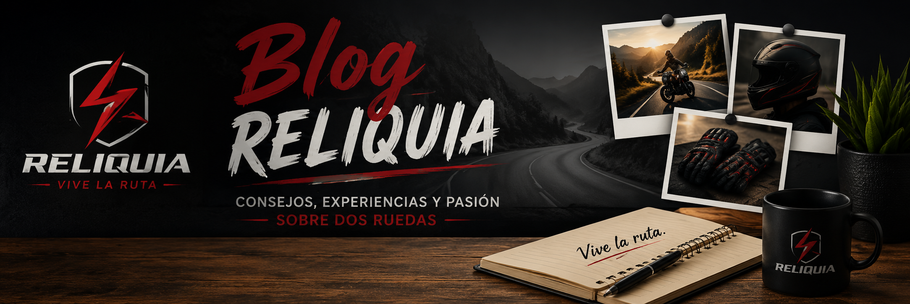

"Consejos, novedades y pasión por las dos ruedas. Vive la ruta con RELIQUIA."
🛣️ 3. Consejos para viajar seguro en carretera
Antes de salir a la carretera, revisa la presión de los neumáticos, el nivel de aceite, los frenos y las luces de tu motocicleta. Usa siempre el equipo de protección completo y mantén una distancia prudente con otros vehículos. La prevención es la mejor compañera de viaje.
⚡¿Cada cuánto debo cambiar mi casco?
Aunque un casco se vea en buen estado, se recomienda reemplazarlo aproximadamente cada cinco años o inmediatamente después de sufrir un impacto fuerte. Los materiales internos pierden sus propiedades con el tiempo y ya no ofrecen la misma protección. #Casco #Seguridad #Reliquia
🏍️. ¿Cómo elegir el casco ideal para tu seguridad?
El casco es el elemento de protección más importante para cualquier motociclista. Antes de comprar uno, verifica que cuente con certificación de seguridad, elige la talla adecuada y considera el tipo de uso que le darás: ciudad, carretera o aventura. Un buen casco puede marcar la diferencia en cualquier recorrido. #Seguridad #Cascos #Reliquia
RESEÑAS
⭐⭐⭐⭐⭐ Carlos Méndez
"Compré un casco en RELIQUIA y la calidad superó mis expectativas. Es muy cómodo, ligero y se siente seguro incluso en viajes largos. Sin duda volveré a comprar aquí."
⭐⭐⭐⭐⭐ Andrea Rojas
"Los guantes tienen un excelente acabado y ofrecen muy buen agarre. Además, el envío fue rápido y el servicio al cliente fue muy amable. Totalmente recomendados."
⭐⭐⭐⭐⭐ Luis Herrera
"Encontré justo el equipo que necesitaba para mis recorridos en carretera. Buena calidad, precios justos y una atención excelente. RELIQUIA se ha convertido en mi tienda de confianza."
⭐⭐⭐⭐⭐ Daniela Torres
"Desde que uso los accesorios de RELIQUIA me siento mucho más segura en cada viaje. Muy buena relación entre calidad y precio. ¡Los recomiendo al 100%!"